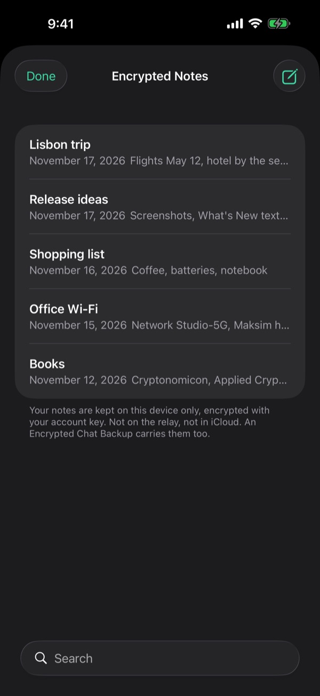

Encrypted Notes
Your notes, on your device only
Where it is
Profile → Encrypted Notes. Tap the pencil to write one: a title and the text, saved as you type. Swipe a note to delete it.

Your device, your storage
Each note is a file on this device, encrypted with a key made from your Account Key. Not on the relay, not in iCloud. Each account has its own.
Send to Chat
In a note, tap …, then Send to Chat. The chat gets a copy as a note card, end-to-end encrypted like a message, up to 4,000 characters. Your note stays here.
Keep a copy
Encrypted Chat Backup in Settings → Security and Data carries your notes, free, and Import brings them back. Erase All Data or deleting Viper removes them.
From the guide in Viper 1.5.34: Profile → Settings → Help → Guides. All posts